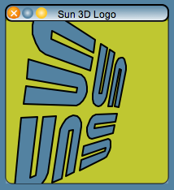
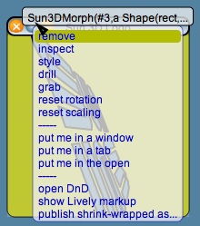
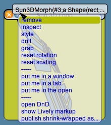

Lively Kernel Tutorial: (7) Windows and Window Controls
Back to Introduction
PREVIOUS
Source code of this demo
NEXT
The Lively Kernel system can support windows that behave
much like windows in conventional desktop operating systems.
Windows are distinguished from other objects in the system
by the presence of a title bar. The title bar contains the
name of the window as well as some window control buttons.
Window controls have balloon help to summarize the behavior
of each control.

 

Notes:
- A window can be moved by grabbing it from the title bar.
- Pressing the window collapse button once will collapse
the window. Pressing the collapse button another time will
restore the window.
- The menu button opens a menu that allows the contents
of the window to be manipulated.
- A window can be resized using the handles in its corners.
Try it yourself! Move the window around by grabbing its title bar.
Try out the menus and the collapse/expand functionality. Finally,
close the window by pressing the close button.